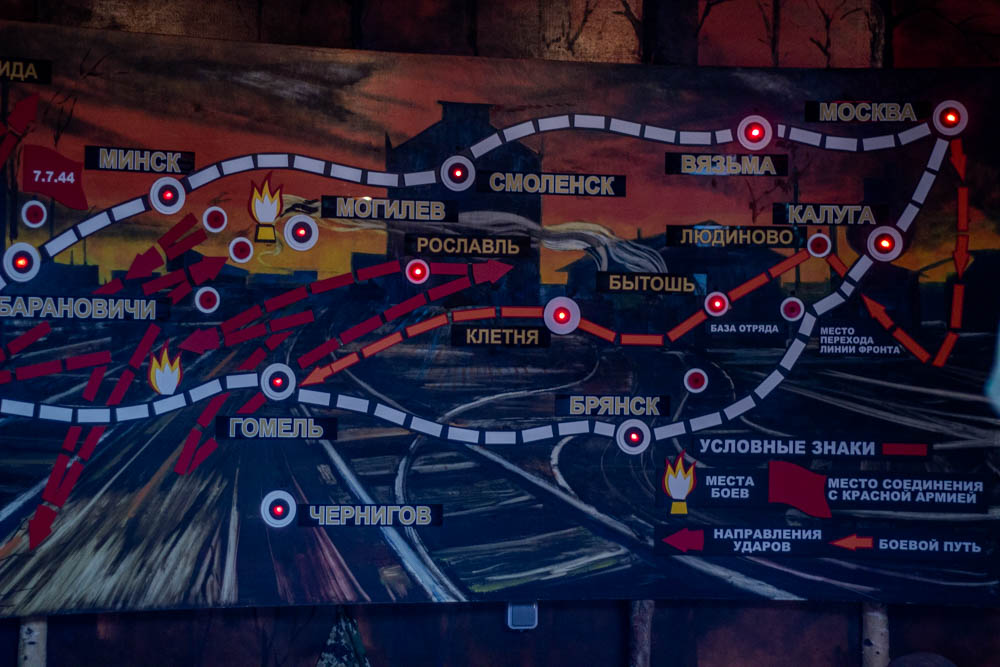

Экспонаты музей

На плане показаны объекты музея. Наведите курсор на миниатюры, чтобы
подсветить, и нажмите на миниатюру — откроется изображение и описание.
Участник: ученик ГУО «Средняя школа №12 г. Могилева» — виртуальный квест по экспонатам музея ГУО «Средняя школа №22 г. Могилева» "Боевой Славы"
Из 41-го хотим вам пожелать
Такого горя никогда не знать:
Чтоб не летел на вас с неба огонь,
Чтобы песни играла гармонь.
Пусть висит одиноко пилотка,
А рядом с нею солдатская фотка.
Кобура лежит для пистолета.
А в 41-ом тяжкое выдалось лето.
Снаряды летели, взрывались,
Гильзы чёрные в землю втыкались.
От жажды спасала нас фляжка.
У командира пробита фуражка.
Нас каска от пуль защищала.
Балалайка от скуки спасала.
Фашист наступал до зимы.
Но не смог он дойти до Москвы.
Мы поганого зверя погнали.
Берёзки и сосны своих защищали.
Мы с победой вернулись домой.
Чемодан прихватили с собой.
Дневник в чемодане друзьям.
От солдат 45-го - вам!
О том, как сражался отряд,
Как лучших терял он ребят.
Они жизни свои положили,
Чтобы в мире народы все жили.
Память о «Славном», ребята, храните!
И МИР на земле сберегите!
Написала стих Бабушка разработчика проекта (Романовская Татьяна Александровна).